Analóg az alap, digitális a kivétel.
Svédország, Dánia és Norvégia is ebbe az irányba fordult: vissza a tankönyvhöz, az íráshoz, az olvasáshoz.
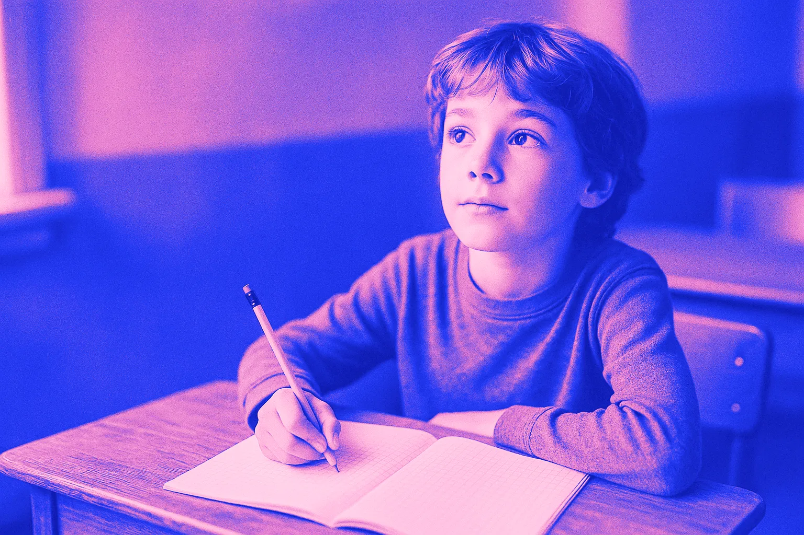
Miért legyen az általános iskolában a könyv, a papír, a ceruza és a tanár az alap – és miért nem az iskola dolga, hogy csillagokra, ládákra és avatárokra szoktassa a gyereket?
Nem azt állítjuk, hogy minden képernyő mérgező. Azt állítjuk, hogy 7–14 éves korban a digitális eszköznek kell bizonyítania, hogy egy konkrét feladatban többet ad a könyvnél, a füzetnél és a tanárnál – nem fordítva.
Svédország, Dánia és Norvégia is ebbe az irányba fordult: vissza a tankönyvhöz, az íráshoz, az olvasáshoz.
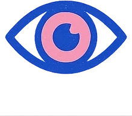
A digitális figyelemelvonás az egyik legjobban dokumentált iskolai probléma – és rosszabb teljesítménnyel jár együtt.
A várt jutalmak gyerekeknél átlagosan csökkentik a belső motivációt – a szimbolikus jutalmak, oklevelek is.
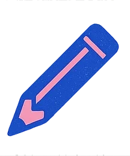
A kézírás olyan mozgásos és észlelési folyamatokat mozgósít, amelyeket a koppintás nem. Hosszabb szöveget papíron átlagosan jobban értünk.
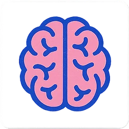
A legerősebb érv a kiszorítás: ami a tableten történik, az nem kézzel írt munka, nem tárgyi tapasztalat, nem közös gondolkodás.
„Az alapkészségek – figyelem, koncentráció, olvasás, írás, számolás – elsajátításának alapját analóg tevékenységek képezzék. Digitális taneszközt csak ott, ahol bizonyítottan segíti a tanulást.”— a svéd kormány 2023 óta követett oktatáspolitikai elve, összefoglalva
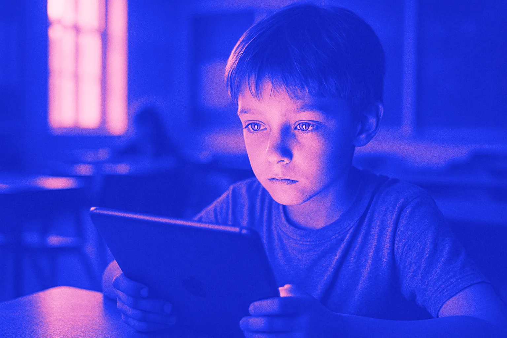
Mire tanít a matekóra, ha jutalmat oszt?
Csillag a helyes válaszért, láda a sorozatért, új sapka az avatárnak. Működik – a gyerek kattint. De vajon mit tanul meg arról, miért érdemes gondolkodni?
Egy gamifikált matekapp nem csak feladatokat ad. Csillagot, ládát, avatár-tárgyat, célokat és ranglistát is – ugyanazokat az eszközöket, amelyekkel a játékipar a visszatérést optimalizálja.
A kérdés nem az, hogy ez működik-e. Hanem, hogy mire tanít.
A motor a következő jutalom. A kör egyre gyorsul, a tananyag pedig lassan eszközzé válik a gyűjtögetéshez.
A motor maga a megértés. Lassabb, van benne elakadás – de a gyereké marad, és nem kell hozzá egyre nagyobb adag külső inger.
Stanfordi óvodásokat, akik szerettek rajzolni, három csoportra osztottak. Az egyik előre tudta: aki rajzol, oklevelet kap. Két héttel később, szabad játékidőben megfigyelték, ki nyúl magától a filctollakhoz.
Az előre megígért jutalomért rajzolók kb. feleannyi időt töltöttek rajzolással, mint a többiek. A jutalom átírta, miért csinálják.
Egy 128 vizsgálatot összesítő metaanalízis szerint gyerekeknél a várt jutalmak átlagosan csökkentették a belső motivációt (d = −0,39) – és a szimbolikus jutalmak, például oklevelek ugyanúgy (d = −0,42), mint a játékok vagy édességek.
Amióta görgetsz, ez az oldal pontokat, szinteket, jelvényeket és ládát adott neked. Semmit nem tanultál tőlük. Mégis odanéztél. Talán rá is kattintottál a ládára – csak hogy lásd, mi van benne.
Te felnőtt vagy, és tudtad, hogy ez egy weboldal. Egy 10 éves gyerek hétről hétre, éveken át, az iskola jóváhagyásával kapná ugyanezt.
Kikapcsolva. Hiányzik egy kicsit? Na, pont erről beszélünk.
Ezen az oldalon egy kis játékos pont- és jelvényrendszer fut, hogy saját bőrödön érezd, milyen a gamifikáció. Kikapcsoltad – vagy egy korábbi látogatáskor kikapcsoltad. Ha kíváncsi vagy rá:
Nem állítjuk, hogy egy gamifikált matekapp bizonyítottan játékfüggőséget okoz – erre nincs közvetlen bizonyíték. A gamifikáció metaanalízisei átlagosan kis–közepes pozitív tanulási hatást is találnak.
Amit állítunk: az iskola mintát ad. Ha a matematikát pontokba, ládákba és avatár-tárgyakba csomagolja, akkor azt tanítja, hogy a tanulás valami más megszerzésének eszköze – és ezt a mechanikát normalizálja egy olyan életkorban, amikor az önszabályozás még épül.
Egy betű kézzel leírva egyedi mozdulatsor, amelyet az agy összekapcsol a látott formával. A billentyűn minden betű ugyanaz a koppintás. A különbség nem nosztalgia – hanem tanulási mechanizmus.
Kisgyerekeknél a kézzel gyakorolt betűket jobban ismerték fel, mint a gépelve gyakoroltakat, és képalkotó vizsgálatban az olvasáshoz kapcsolódó agyi hálózat csak kézírásos gyakorlás után aktiválódott.
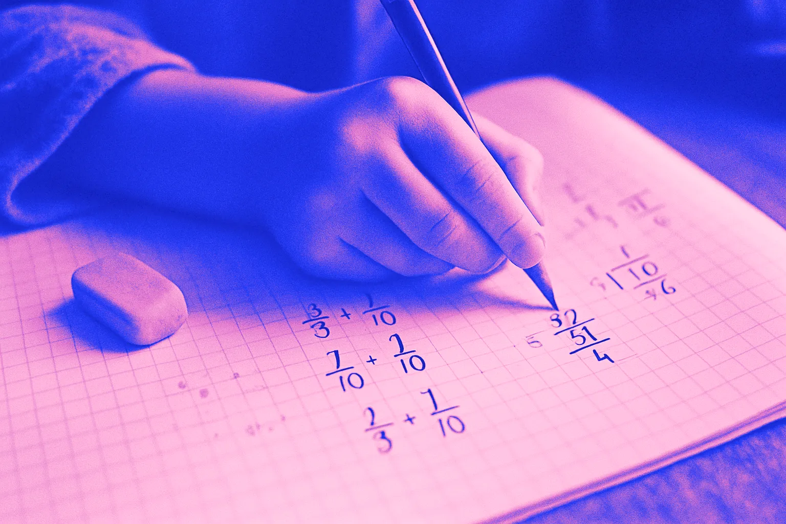
egyedi mozdulat minden jelhez⌨ Most „gépelj”:
Szemléltetés, nem mérés. *A távolság képernyőpontokból becsült. A lényeg: a kézírásnál minden jelhez saját mozgásprogram kell, gépelésnél a mozdulat egyforma.
54 vizsgálat, 171 055 résztvevő: a nyomtatott szöveget átlagosan jobban értették meg (g = −0,21 a képernyő rovására). A különbség időnyomás alatt és ismeretterjesztő szövegeknél nagyobb – és az évek során nem csökkent, hanem nőtt. Egy másik metaanalízis szerint papíron az olvasók azt is pontosabban ítélik meg, mennyit értettek.
Ez nem jelenti, hogy minden képernyős olvasás rossz – kis, de ismételten kimutatható hatásról van szó. A felső tagozaton viszont a gyerek már olvasással tanul: matekot, történelmet, biológiát.
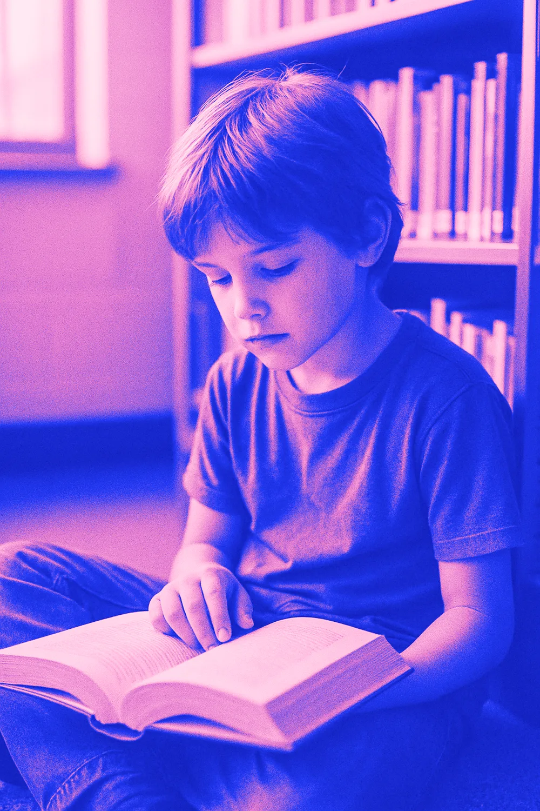
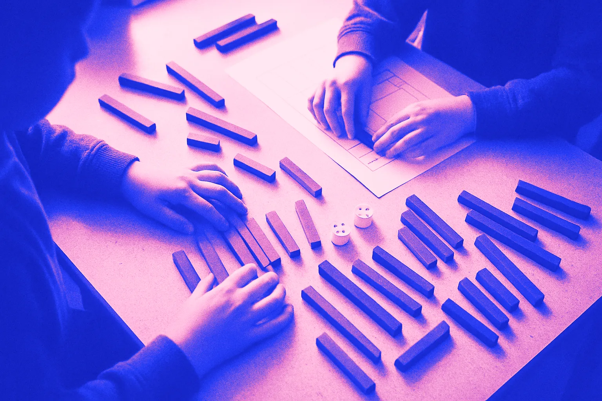
a matek a kézben kezdődik55 vizsgálat metaanalízise szerint a tárgyi eszközökkel tanított matematika jobb eredményt hozott, mint a csak szimbólumokkal tanított (d = 0,37). A legnagyobb hatás a megtartásban (0,59) és a törteknél (0,69) volt – és az általános iskolás korú gyerekeknél (0,45).
Egy képernyőn is lehet kockát húzogatni. De a fa súlya, a rúd hossza, a kéz mozdulata és a padtárs keze mellette – az más tapasztalat.
Próbáld ki magadon, mit tesz a fókusszal egy „gamifikált” felület. Két kör egyszerű fejszámolás – az egyik csendes, a másik csillogó.
%-a a 15 éveseknek legalább néhány matekórán eltereli a figyelmét a társak digitális eszköze. Akiket gyakran, azok átlagosan 15 ponttal gyengébben teljesítettek. A PISA 2025-ben minden negyedik diák szerint a társak a legtöbb vagy minden természettudományos órán az eszközükkel foglalkoznak.
Ennyi volt az óvodások figyelmen kívüli ideje dúsan dekorált vs. visszafogott teremben – és a tesztpontosság 42% → 55%. Ha a falon lévő képek ennyit számítanak, mit tesz egy mozgó, csilingelő felület?
A „csábító részletek” hatása: a tananyaghoz nem tartozó érdekes képek, történetek, animációk átlagosan rontják a tanulást (58 vizsgálat, 7500+ diák).
A PISA-adatokban a napi legfeljebb ~1 órás, tanulási célú használat jobb eredménnyel járt együtt, mint a semmi – a szabadidős használat viszont már 1 óra felett romló eredménnyel. Ez megfigyeléses adat, nem bizonyít okot. De pont azt mutatja: a digitális eszköz adagolt, célhoz kötött kivétel legyen, ne alapállapot.
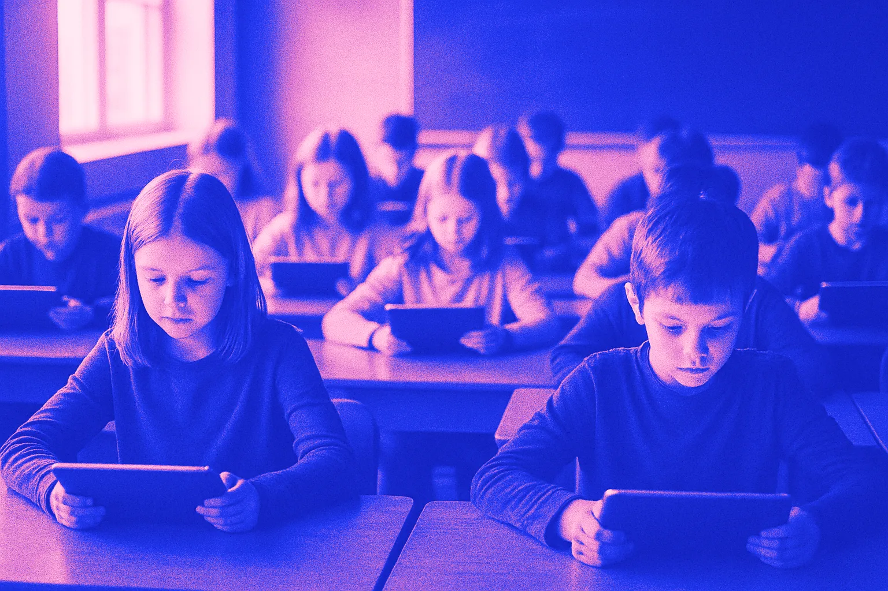
Több gép nem jelent több tudást.
Az OECD elemzése szerint azokban az országokban, amelyek sokat fektettek az oktatási IKT-ba, nem volt érdemi javulás az olvasás, a matematika és a természettudomány eredményeiben.
Ezek a kutatások főleg a teljes képernyőidőről és az esti használatról szólnak, nem az iskolai tabletről. De az iskolai percek erre adódnak rá – és az iskola mintát ad.
Rövidlátás. 45 vizsgálat, 335 524 résztvevő: minden további napi képernyőóra kb. 21%-kal magasabb eséllyel társult – 4 óránál már közel kétszeres esély (OR 1,97). Az oksági bizonyosság alacsony.
Alvás. 125 198 gyerek adatai alapján a lefekvés körüli eszközhasználat több mint kétszeres eséllyel járt elégtelen alvással; már az eszköz hálószobai jelenléte is kedvezőtlen.
Saját telefon 12 évesen. Több mint 10 000 gyerek (ABCD-vizsgálat): magasabb depresszió- (1,31), elhízás- (1,40) és elégtelen alvás- (1,62) esély – háttértényezők kontrollja mellett.
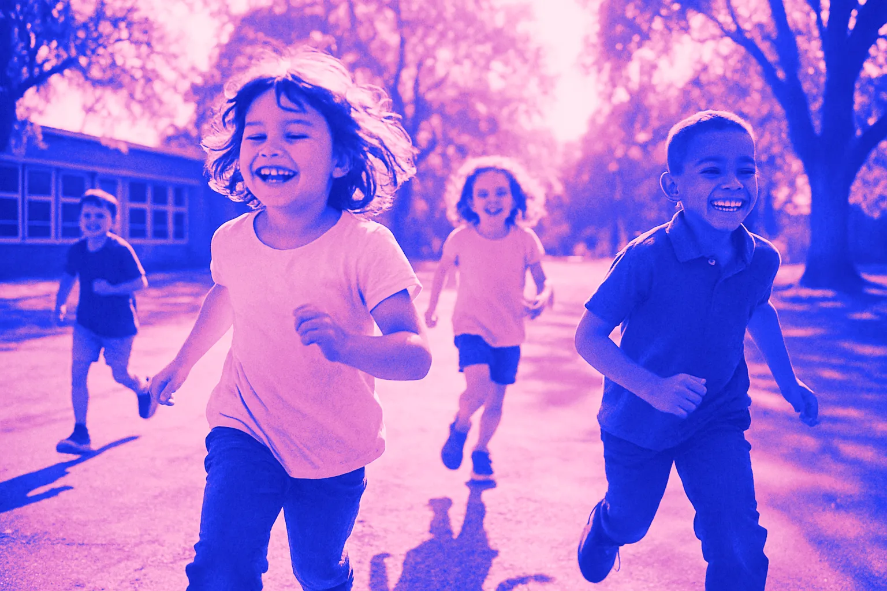
Szabad levegő, messzire nézés, mozgás.
A szabadban töltött idő a rövidlátás egyik ismert védő tényezője – és minden perc, amit a gyerek nem képernyő előtt tölt, ide is mehet.
Az iskola általában egy tantárgy perceit mondja meg. A gyerek szemének, alvásának és figyelmének viszont a teljes összeg számít. Állítsd be a saját gyereked hetét.
Azok az országok, amelyek a leggyorsabban digitalizálták az iskolát, ma tudatosan lépnek vissza. Nem tiltással – hanem azzal, hogy a képernyőnek kell bizonyítania.
Idővonal – görgesd oldalra →
OECDAz IKT-ba sokat befektető országokban nem javult érdemben az olvasás, matek, természettudomány.
Karolinska Intézet„A digitális eszközök a tanulást inkább ronthatják, mint javíthatják.”
Svédország685 M SEK tankönyvekre, a digitalizációs stratégia leállítva.
UNESCO GEMTechnológia csak akkor, ha egyértelműen segíti a tanulást.
HollandiaTelefon nélküli osztálytermek.
Dánia12 képernyő-ajánlás + 540 M DKK nyomtatott könyvekre.
MagyarországOkoseszközök korlátozása 1–8. évfolyamon; használat csak céllal és időtartammal.
SvédországÓvoda: megszűnt a digitális eszközök követelménye.
Los Angeles (LAUSD)Képernyőidő-korlátozás az osztálytermekben, papír és toll előnyben.
SvédországEgész napos mobilmentes iskola.
Néhány válasz meg fog lepni – mindkét irányban. Pont ettől lesz hiteles, amit utána mondasz.
Az iskola nem tudja bebizonyítani, hogy „a tablet nem káros” – ez megválaszolhatatlan. Azt viszont meg tudja mondani, mit vált ki, mennyi ideig, milyen céllal és milyen bizonyíték alapján.
Válaszd ki, mit kérdeznél az iskolától:
A levél a böngésződben készül, semmit nem küldünk el és nem tárolunk.
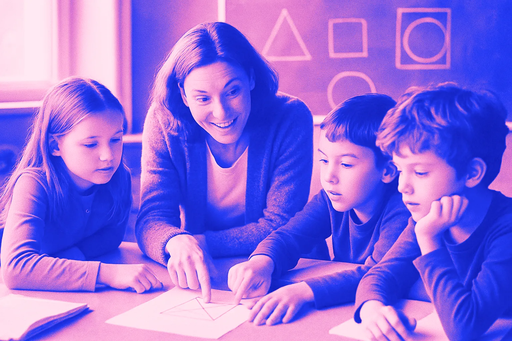
A játék nem ellenség. A képernyős, gyűjtögetős jutalomhurok az. Íme hat bevált, analóg módszer, amely játékos, mégis a megértést jutalmazza.
Szorzó-kártyacsata, „Kinek lesz közelebb 100-hoz?”, dominós törtpárosítás. Van benne izgalom – de a nyeremény a gondolkodás.
„Hányféleképpen számoltad ki?” – 10 perc fejszámolás után a stratégiák összevetése a táblánál. Minden megoldás érték.
A hibák maradjanak benne. A gyerek látja a saját fejlődését – ez a legerősebb, belső „jelvény”.
Rudak, törtkorongok, játékpénz, mérőszalag. A törteknél és a megtartásnál a legnagyobb a hatásuk.
Az udvar lemérése, recept átszámolása, becslés és ellenőrzés. A „miért kell ez?” kérdésre a világ válaszol.
Egy feladat, két ceruza, egy papír. A magyarázás a legjobb tanulás – és a társas élmény a legjobb motiváció.
A konkrét, a munkára vonatkozó tanári visszajelzés („Itt jól választottad a közös nevezőt”) a teljesítményről és a stratégiáról szól – nem egy virtuális tárgyról. Ez építi a kompetenciaélményt, ami a belső motiváció egyik alapja.
„Analóg először – digitális kivételként”: egy védhető szakpolitikai keret 7–14 éves korra.
A túlzás a legrövidebb út ahhoz, hogy egy jó ügyet elutasítsanak. Ezek azok a mondatok, amelyeket mi is kerülünk – és amit helyettük mondunk.
Átlagosan igen, kis–közepes mértékben (kognitív g = 0,49, motivációs 0,36, viselkedéses 0,25). Csakhogy a szigorúbb módszertanú vizsgálatokban csak a kognitív hatás maradt stabil. Egy K–12 metaanalízisben az általános iskolában a motivációs hatás kisebb volt (g = 0,31), mint idősebbeknél.
A válaszunk: nem az a kérdés, hogy egy jutalom rövid távon mozgat-e – hanem hogy mit tanít hosszú távon arról, miért érdemes tanulni.
Igen, és ezt tisztességes elmondani. Például a Matific saját oldala 25+ vizsgálatra hivatkozik, köztük egy 8 iskolás ausztrál, előtte–utána vizsgálatra 34%-os javulással.
A kérdés viszont: milyen kontrollcsoporthoz képest? Egy előtte–utána mérés nem mondja meg, hogy ugyanennyi jól vezetett, papíralapú gyakorlás nem hozott volna-e ugyanennyit vagy többet.
Igaz: a 2026. augusztusi útmutató szerint a szabadidős és az oktatási technológiahasználat nem azonos, és az EdTech-et tanulási eredmények alapján kell megítélni, nem képernyőidő alapján.
Ezzel egyetértünk – pont ezért kérjük a tanulási eredményt igazoló, kontrollált bizonyítékot, és a jutalomréteg szétválasztását a tartalomtól.
Így van. A brit kormány 2026-os útmutatója kerüli az általános szabályokat, a telefonokra viszont alapértelmezett tilalmat ír elő. Mi sem kérünk mindenhol érvényes percszámot – hanem célhoz és időhöz kötött, indokolt használatot.
Igen, egyes esetekben a digitális eszköz kifejezetten hasznos segédeszköz (pl. diszgráfia, látássérülés, kommunikációs nehézség). Ez pontosan az a „dokumentált pedagógiai többletérték”, amit az „analóg először” elv megenged. Ez egyéni döntés – nem indok arra, hogy egy egész osztály matekóráját gamifikált appra építsük.
Az értékelés szerint az általános iskolák 23%-a látott pozitív hatást – de ott a telefon eleve nem volt nagy probléma. A középiskolák 75%-a jobb koncentrációról számolt be. Ebből az következik: ahol nincs eszköz, nem kell kivezetni. Ne vezessük be oda, ahol eddig nem volt.
Jogosan: a gyakran idézett angol változat („a digitális eszközök rontják a tanulást”) erősebb, mint az eredeti. A svéd szöveg úgy fogalmaz, hogy egyértelmű tudományos alátámasztása van annak, hogy a digitális eszközök kockázatot jelentenek: inkább ronthatják, mint javíthatják a tanulók tanulását. Más kutatók szerint a kép árnyaltabb. Mi ezért a kockázat–haszon mérlegelés mellett érvelünk, nem tilalom mellett.
Kormányzati dokumentumok, metaanalízisek, lektorált tanulmányok – és a gyártó saját leírásai. A szövegben lévő kis számokra kattintva ide ugrasz.
„A gyerekkor nem technológiai tesztlabor. Az általános iskolában a könyv, a papír, a kézírás, a tárgyi tapasztalat, a tanár és a társak legyenek az alap. Képernyő csak akkor vegyen el ebből az időből, ha bizonyíthatóan többet ad.”
Ez nem technológiaellenesség. Ez bizonyítékalapú óvatosság – ugyanaz az elv, amely felé Svédország, Dánia, Norvégia és az UNESCO is elmozdult.
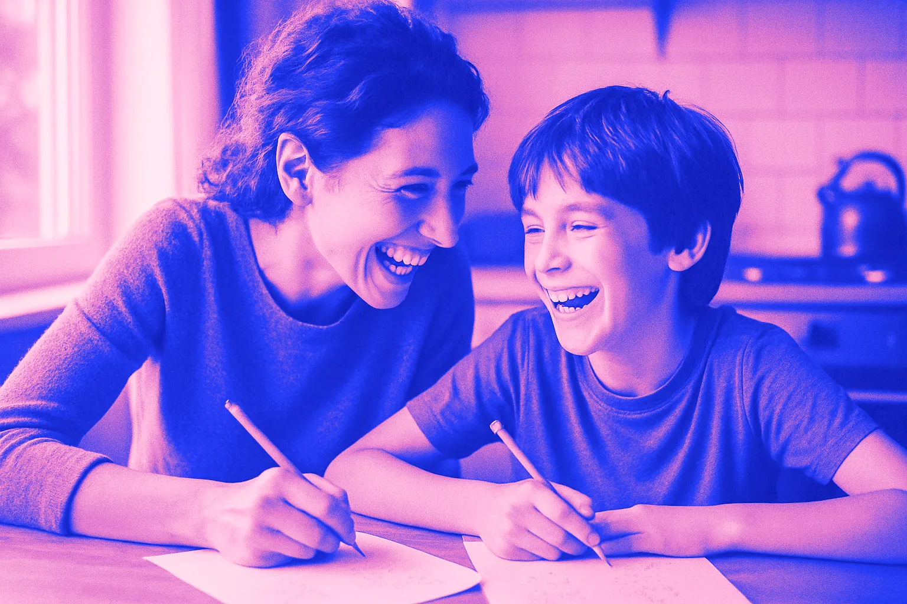
több valódi pillanat együttA svéd kormány 2023 óta azt az elvet követi, hogy az alapkészségek elsajátításának alapját analóg tevékenységek adják, és digitális taneszköz csak ott jelenjen meg, ahol dokumentáltan segíti a tanulást.
Ez a szemlélet megfordítja a bizonyítási terhet: nem a könyvnek kell igazolnia, miért marad – hanem a képernyőnek, miért jön.
A PISA 2022 adatai szerint a 15 évesek 59%-ának legalább néhány matekórán eltereli a figyelmét, hogy társai digitális eszközt használnak; 65% a saját eszközét említi. Akiket a társak eszközhasználata gyakran zavar, átlagosan 15 ponttal gyengébben teljesítettek.
A PISA 2025-ben minden negyedik diák arról számolt be, hogy a természettudományos órák többségén vagy mindegyikén a társak az eszközükkel foglalkoznak.
Egy gamifikált felület – mozgó figurák, jutalom-animációk, felugró értesítések – pont az a fajta inger, amely a figyelmet a feladatról a felületre tereli.
Deci, Koestner és Ryan 128 kísérletet összesítő metaanalízise szerint a várt, kézzelfogható jutalmak csökkentették a belső motivációt (d = −0,36). Gyerekeknél a hatás erősebb volt (d = −0,39), mint egyetemistáknál (−0,27).
Fontos: ez nem jelenti, hogy minden visszajelzés káros. A tájékoztató, a munkára vonatkozó visszajelzés más, mint egy gyűjthető, előre beígért virtuális tárgy. A digitális csillag, láda és avatár-tárgy viszont jellemzően az utóbbi kategória.
A kézírás látást, finommotorikát, testérzékelést és nyelvet kapcsol össze. Minden betűhöz saját mozgásprogram kell; a gépelés egyforma ujjmozdulatokra redukálja ezt.
Az általános iskola legszűkösebb erőforrása a gyerek figyelme és a tanítási idő. Ha 30 perc a tableten történik, az a 30 perc nem:
Az OECD 2015-ös elemzése szerint azokban az országokban, amelyek sokat fektettek az oktatási IKT-ba, nem volt érdemi javulás az olvasás, a matematika és a természettudomány eredményeiben. Andreas Schleicher megfogalmazásában: a technológia felerősítheti a nagyszerű tanítást, de a nagyszerű technológia nem pótolja a gyenge tanítást.
A viselkedéslélektan régóta ismeri: a változó arányú jutalmazás – amikor nem tudni, mikor és mennyi jár – tartja fenn a legerősebben és a legtartósabban egy viselkedést. Ezen alapul a nyerőgép, és ezen a videojátékok „loot box”-a, a véletlen tartalmú láda.
Felnőtt játékosoknál a loot boxokra költés összefüggött a problémás szerencsejáték súlyosságával (n = 7 422), 16–18 éveseknél ez a kapcsolat még erősebbnek mutatkozott. A kutatók külön tárgyalják a játékokba épített, a visszatérést és a költést ösztönző „ragadozó” mechanikákat.
Nem állítjuk, hogy egy oktatási láda szerencsejáték-függőséget okoz. Azt kérdezzük: miért kell ezt a mintát az iskolának tanítania?
Ha egy eredetileg érdekes tevékenységért előre beígért jutalom jár, a gyerek „átírja” magában, miért csinálja: „a csillagért” a „mert érdekes” helyett. Amikor a jutalom elmarad, a tevékenység vonzereje is csökken.
A klasszikus filctollas kísérletben az előre jutalmat ígért óvodások két héttel később szabad játékidőben kb. feleannyit rajzoltak, mint társaik. A 128 kísérletet összesítő metaanalízis szerint a hatás gyerekeknél erősebb, és a szimbolikus jutalmakra (oklevél) is érvényes.
A tananyaghoz nem tartozó érdekes képek, figurák, történetek és animációk átlagosan rontják a tanulást: 58 vizsgálat, 68 hatás, több mint 7 500 diák alapján g = −0,33.
Ezért a jó kérdés egy matekappnál nem az, hogy „digitális-e?”, hanem: minden animáció, figura és jutalom a matematikai fogalmat szolgálja – vagy egy metajátékot épít a matematika köré?
Az óvodás vizsgálatban már a dekorált falak is több figyelmen kívüli időt és gyengébb tesztpontosságot jelentettek (38,6% vs. 28,4%; 42% vs. 55%).
A napi célok, sorozatok („streak”), szintlépések és értesítések célja, hogy a felhasználó rendszeresen visszatérjen. Ez a szórakoztató appok tervezésének alapeszköztára.
Iskolai környezetben ez kétélű: a rendszeres gyakorlás jó – de ha a visszatérés motorja a sorozat megtartása és a következő jutalom, akkor a gyerek a mechanikára szokik rá, nem a tárgyra.
Példaként a magyar nyelven is elérhető Matificot mutatjuk be – kizárólag a gyártó saját leírásai alapján:
| Elem | A gyártó leírása szerint |
|---|---|
| Metajáték | „Rich, Engaging Meta-Game” – a matematika köré épített játék |
| Avatar | a diákok tárgyakat oldanak fel, amelyekkel az avatárjukat személyre szabják |
| Célok, achievementek | „a helyes viselkedést ösztönző” célok és teljesítmények |
| Ládák | „3 tier chest reward system” – háromszintű ládajutalmazás, amely az újrajátszást ösztönzi |
| Csillagok, ranglista | teljesítmény alapján gyűjthető csillagok; osztályszintű ranglista |
A kritika tehát nem az, hogy „rossz termék”. Hanem az, hogy egy ilyen eszköz szándékosan épít játékmechanikára – és az iskolának kell eldöntenie, akarja-e ezt a mintát adni, ha ugyanez a matematika papíron, tárgyakkal és tanári visszajelzéssel is tanítható.
2024-ben nagy visszhangot kapott egy 256 csatornás EEG-vizsgálat: 36 egyetemistánál kézírás közben kiterjedtebb agyi kapcsolódási mintázatot mértek, mint gépelésnél.
Egy 2025-ös szakmai kommentár jogosan bírálta: felnőttek vettek részt, a tanulást magát nem mérték, a gépelés egy ujjal, életszerűtlen módon történt.
A kutatók több lehetséges okot vizsgálnak:
A különbség az évek során nem tűnt el, pedig a fiatalabb generációk egyre több képernyőt használnak. A norvég kormány képernyő-bizottsága és iskolastratégiája is foglalkozik a papíralapú olvasás szerepével.
| Adat | Érték |
|---|---|
| Saját eszköz elvonja a figyelmet (legalább néhány matekórán) | 65% |
| Társak eszköze elvonja a figyelmet | 59% |
| Teljesítménykülönbség a gyakran zavart diákoknál | −15 pont |
| Napi ≤1 óra tanulási célú használat | +14 pont a nem használókhoz képest |
| Szabadidős használat az iskolában | 1 óra felett negatív kapcsolat |
PISA 2022, Volume II. Megfigyeléses adatok – összefüggést mutatnak, nem okot.
Az amerikai iskolaigazgatók 53%-a szerint a telefonok rontják a tanulmányi teljesítményt; a közoktatási iskolák 77%-a, az általános iskolák 86%-a tiltja a telefont tanórán.
28 longitudinális vizsgálat áttekintése szerint a digitális média (különösen a gaming és a közösségi média) és az ADHD-tünetek között kétirányú kapcsolat van: a figyelemzavarral küzdő gyerekek hajlamosabbak a problémás használatra, és a problémás használat később több figyelmi tünetet jelezhet előre. A kapcsolat a problémás használatnál erősebb, mint a puszta képernyőidőnél.
A 2025-ös dózis–hatás metaanalízis (45 vizsgálat, 335 524 résztvevő) szerint minden további napi képernyőóra kb. 21%-kal magasabb eséllyel járt együtt; a kapcsolat nem lineáris: 1 óránál OR 1,05, 4 óránál már OR 1,97.
A szerzők a bizonyosságot alacsonynak ítélték (megfigyeléses vizsgálatok, heterogenitás). A lehetséges mechanizmus a sok közeli fókuszálás, és hogy a képernyő a szabadban töltött időt is elveheti – a kültéri idő a rövidlátás egyik ismert védő tényezője.
20 vizsgálat, 125 198 gyerek: a lefekvés körüli eszközhasználat elégtelen alvással (OR 2,17), rosszabb alvásminőséggel (1,46) és nappali álmossággal (2,72) járt együtt. Már az eszköz hálószobai elérhetősége is (OR 1,79).
A 10 588 gyereket követő ABCD-vizsgálatban a 12 évesen saját okostelefonnal rendelkezőknél magasabb volt a depresszió (OR 1,31), az elhízás (1,40) és az elégtelen alvás (1,62) esélye; minden korábbi évvel kapott telefon tovább növelte az elhízás és az alváshiány esélyét.
Ez nem iskolai tabletvizsgálat, és nem is használjuk közvetlen bizonyítékként. Azért említjük, mert a gyerek napja egy egész: ami az iskolában „csak 30 perc”, az egy egyre képernyősebb nap része – és az iskola példát ad arról, hogy a tanulás is képernyőn, jutalomért zajlik.
Svédország az egyik legdigitalizáltabb iskolarendszer volt. 2023 óta tudatosan fordít:
Svédország nem tiltott be minden képernyőt – a fordulat lényege a bizonyítási teher megfordítása.
A 2024. márciusi közoktatási megállapodás 540 millió koronát különített el fizikai könyvekre, kifejezetten a képernyőalapú tanítás ellensúlyaként.
Az oktatási hatóság 12 ajánlása többek között:
A norvég kormány „Gyakorlatiasabb iskola” stratégiája (Meld. St. 34, 2024) és a képernyőhasználati bizottság jelentése (NOU 2024:20) egyaránt foglalkozik a digitalizáció előnyeivel és hátrányaival, a papíralapú olvasással és az órai figyelemelvonással.
A norvég parlament illetékes bizottsága úgy fogalmazott: sok minden utal arra, hogy a tanulóknak többet kellene papíron olvasniuk.
Norvégia sem tiltja az oktatási technológiát – elismeri, hogy jól alkalmazva hasznos lehet, de a digitális alapállapotot újragondolja.
2025-re a közoktatási iskolák 77%-a, az általános iskolák 86%-a tiltotta a telefont tanórán.
2026 áprilisában a Los Angeles-i tankerület (LAUSD, az ország egyik legnagyobb) határozatot fogadott el: óvodában és 1. osztályban nincs eszköz, ebédszünetben és szünetben sincs, és ösztönzik a papír–toll alapú munkát; az EdTech-szerződéseket felülvizsgálják.
2024 januárjától a középiskolákban, a 2024/25-ös tanévtől az általános iskolákban is megállapodás szerint nincs telefon az órán. Az értékelés szerint a középiskolák 75%-a jobb koncentrációt, 59%-a jobb társas légkört, 28%-a jobb tanulmányi eredményt tapasztalt.
Az általános iskoláknak csak 23%-a látott pozitív hatást – ott a telefon eleve nem volt nagy probléma. Ez is tanulság: ahol nincs eszköz, ott nem kell bevezetni.
Angliát gyakran hibásan úgy említik, mint ahol „kivezetik az iPadet”. Valójában:
Ezt önként feltüntetjük – mert egy hiteles érvelés nem hallgatja el, ami nem illik bele.
2024. szeptember 1-jétől a 245/2024. (VIII. 8.) Korm. rendelet szerint az általános iskola 1–8. évfolyamán az okoseszközöket a tanítási nap kezdetén le kell adni. A pedagógus vagy az igazgató tanulmányi célból engedélyezheti a használatot – az engedélyben rögzíteni kell a célt, az időtartamot és az eszközt.
2023 végén 60, 2024 végén már 79 oktatási rendszerben (az országok kb. 40%-ában) volt valamilyen iskolai okostelefon-korlátozás.
A UNESCO nem technológiaellenes. Pont ezért erős ez az elv: a technológiának kell igazolnia magát.